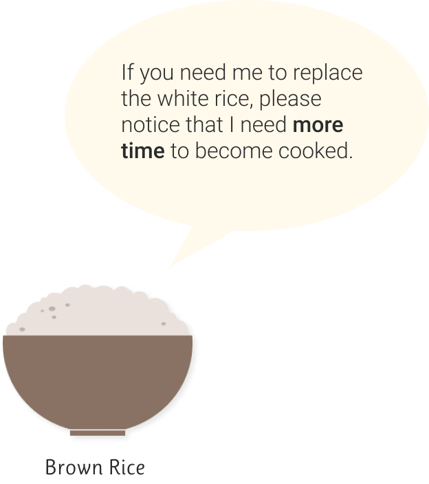
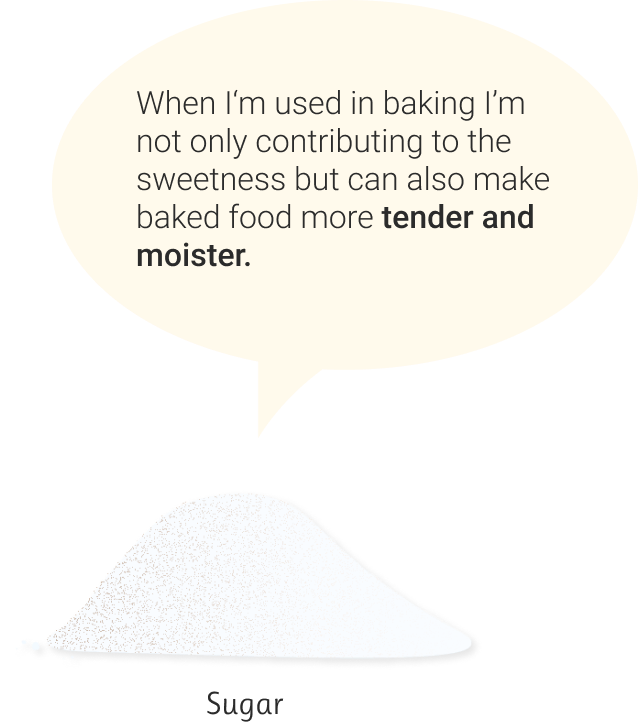
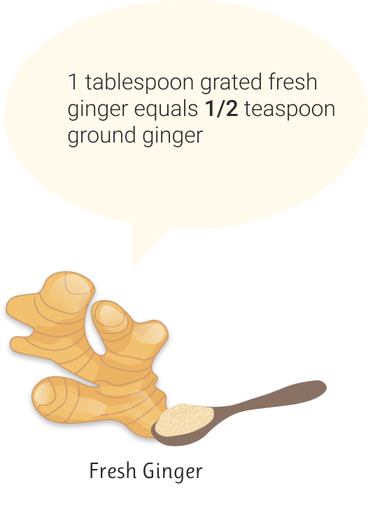
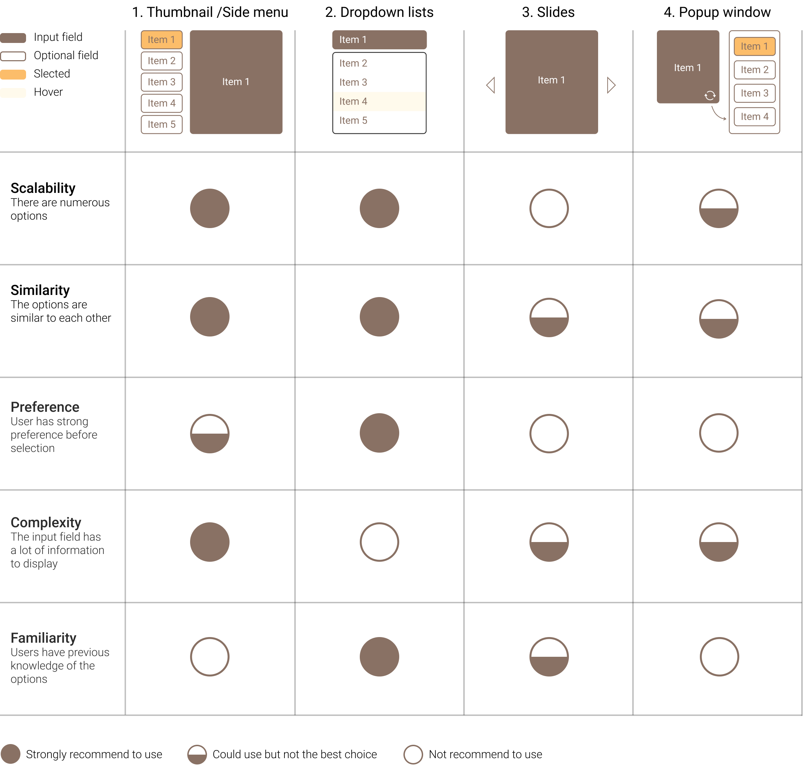
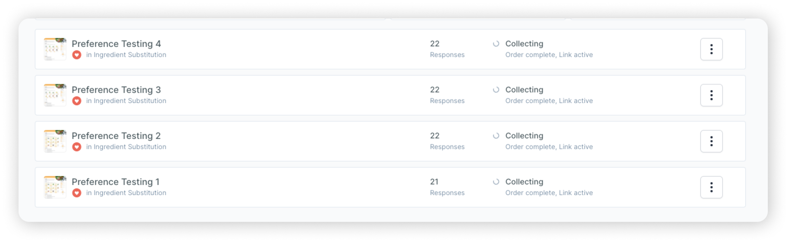
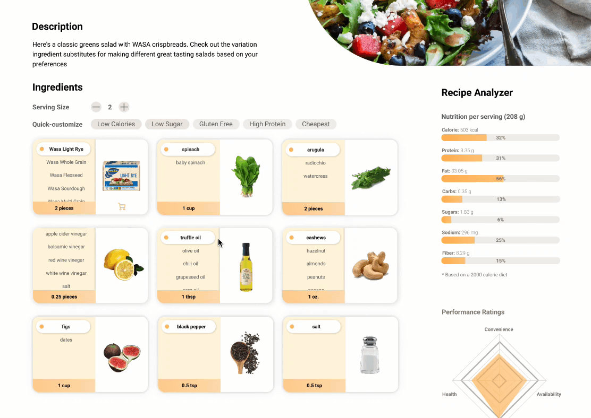

Loading...
Loading...
Loading...
Loading...
Reimagine an AI-powered recipe ingredient substitution UX
Plant Jammer uses Artificial Intelligence (AI) to provide dynamic recipes for small brands, retailers, and large food & beverage brands. Because the recipes are dynamic, users can substitute ingredients and get real-time cooking instruction updates. The Plant Jammer team seeks focused inspiration from the UX Design community. The portfolio-building challenge is to go from zero to one and rethink the experience of substituting recipe ingredients and share ideas through 2-3 unqiue design concepts.
Early data shows lower-than-expected user-engagement with the current ingredient substitution experience. Increasing user engagement is important, because it can be measured and leveraged to help Plant Jammer sell their solution.
Example of Plant Jammer's current ingredient substitution experience
Health Plan
Improve the eating pattern
People want to replace some ingredients in the current recipe with healthier options. For example, replace the fat in baking with a low-calories substitute.
Special Diets
Cook for specific conditions
For some types of diets such as vegan, halal ,and paleo, the way people choose ingredients for cooking varies based on specific restrictions or preferences.
Lack of Ingredients
Do not have it on hand
When the ingredient is not available in the kitchen or it is too expensive to purchase, ideal alternatives will give a smoother meal planning journey.
Retain Traffic
Increase cart value
If users are not able to get all the ingredients on the retailer's website they will probably navigate to another retailer’s site. Substitution increases the ingredient availability and makes the users stay longer and shop more.
Engage Shoppers
Enchance experience
Helping consumers to adapt to unfamiliar ingredients can enable them to gain valuable cooking insights and have a more enjoyable shopping experience.
Do not realize the differences in cooking methods
Fail to understand the complex roles of the ingredient
Do not know how to tweak the amount of substitutes

Simple and clean, easy to follow
Responsive cooking methods and amount adjustment are helpful.
Confusion -
It is good it can have all dropdowns expanded but it is also making substitutes indistinguishable from other ingredients.
Sometimes the order of ingredients changes after substituting certain ingredients.
Call to Action -
Unclear accordance because the swap icon stays the same color as texts, hard to stand out.
Users lack the drives to try the substitutes.
Attractiveness -
The graphics of ingredients are not appealing enough.
Cannot inform users of the final appearance of the dish.
Flicking through cookbooks or browse recipe websites for substitution insights
Ask professionals or friends for ingredient substitution tips
Risk of failure due to lack of experience and knowledge, as well as the gap in cooking skills
Improper guidance eventually causes food to expire and waste
AI-powered ingredient database to offer consistently reliable and trustworthy contents
Smart recipe equipped with features of changeable ingredients
Responsive cooking methods and amount adjustment
Informative analysis to evaluate the ingredient selections
These are 4 variations of substitution interactions that can be classified according to the cases in the last section. They have different performances when applied under different scenarios.

Scalability: High
According to Plant Jammers sample recipes, the number of substitute options can be up to 10.
Similarity: Medium-high
There are no obvious clues indicate that certain ingredients will stand out compared to others.
Preference: It depends
Some people already have what to cook in mind while others might want to explore a little bit.
Complexity: Medium
Typical ingredient information could include: ingredient name, ingredient image, and the amount.
Familiarity: Low
It is not quite likely that users look at a recipe of which dish they are experienced to cook.
After comparing with the chart above, it turns out:
1-Thumbnail/ Side menu > 4- Popup window >2-Dropdown lists > 3-Slides
Let’s try the first three interactions (1, 4, 2) in the design!
The ingredient card consists of an optional field on the left and an image of the ingredient on the right. All substitutes are listed in the side menu and more can be seen by scrolling down. Users only need to select their favorite ingredient on the left side to see the updates of the image and the required amount.
The ingredient card only shows the selected ingredient and there is a swap button in the upper right corner. Users who want to replace the current ingredient can click on the swap button and see all the substitutes in a popup window. After selecting one of the substitutes, the ingredient card will replace the contents with the info of the selected one.
The image and information of the original ingredient are displayed in a row of the selection input field. Clicking on the dropdown button will expand the dropdown menu where lists all the substitutes. Users can select the substitute they like or click anywhere outside of the dropdown to close it and keep the current choice.
If food retailers or food brands publish their recipes on their websites, it is useful to indicate whether users can directly purchase the ingredients mentioned in the recipe. Having these shoppable items featured with a cart icon () to add the ingredient to the shopping lists helps convert recipe ingredients directly into revenue-generating experiences.
Quick Customization
Diet trends
Provide trending dietary options to let users quickly substitute the current ingredients with food that conform to their preferable eating habits.
Insights and motivator
When users do not have obvious eating preferences, these keywords also provide them with suggestions and insights on healthy eating.
Educate and learn
Users' lack of relevant knowledge of the benefits of ingredients is one of the reasons for low engagement. This feature can also make users better understand the effects of various food.
Recipe Analyzer
Calorie and Nutrition Calculator
The calorie and nutrition calculator helps users to get more informed about the benefits of the combination of various ingredients. It is useful to guide users to make more suitable choices of what to eat and increase user engagement.
The Radar Chart of Recipe Ratings
To create good ingredient experiences, The following points are crucial:
Instructions
As an indispensable component of the recipe, the instructions are designed with progress indicators to make users easy to follow the steps.
Reviews
Comments from other users also provide valuable insights into interesting substitution experiences. It also provides clues of “tried and true” to make the recipe more reliable.
To evaluate which concept is better (noted that the only variance between the 3 concepts is the substitution interaction), I posted 4 preference tests and recruit/invite users to choose from three design concepts. The tests establish four criteria of design usability.
At the first glance, which design most clearly embodies the purpose of this website (smart recipe with ingredient substitution function)?
Which design makes you most likely to try out the substitute options?
Which design would take you less time to decide what to cook?
From visual, which design do you prefer?
The main purpose of Plant Jammer is to increase the user engagement of ingredient substitution, so the most important criteria could be clarity and engagement. It means the design should clearly embody the substitution features and effectively motivate users to try the substitutes. From the testing results, it shows Concept 1 and Concept 2 both achieve high clarity and engagement potential.
However, when users are more willing to swap between different ingredients, they tend to spend more time completing the task of deciding what to cook. This is why Concept 1 got the lowest responder’s votes in the efficiency test because it largely facilitates the substitution process by displaying as many options at once.
Combining the evaluation results and interaction characteristics, I summarized the strengths and weaknesses of these concepts
Strengths
Engaging users
It indicates that there are alternatives for some ingredients. Strongly implied that the ingredient is swappable by displaying the substitutes in the side menu.
Reducing cognitive load
Users do not have to memorize the ingredients alternatives. The available options are easy to see holistically.
Visual impression
The ingredient section stands out visually and seems like an important part.
Weaknesses
Scrolling Issue
If users want to scroll in the sidebar to see hidden options, it is easy for them to put the mouse cursor in the outer area then scroll down the whole page.
Overwhelming information
Cooks who do not need to substitute any ingredient, are easily distracted by the contents that do not make sense to them.
Take too much space
The size of the ingredient card is big. If there are a lot of ingredients in the recipe, users will have to scroll down a lot to see what is needed. It is also hard to adapt to smaller screen size.
Strengths
Call to action
The swap icon is standing out. Users have strong motivation to click on to see what will happen and what will be contained.
Easy to understand
It only displays the original ingredients with images. For users who are fine with the original recipe or who are ready to cook, the overall recipe is easy to follow.
Clean layout
It has a decent layout with proper contents just like in a traditional recipe.
Weaknesses
Attention switches
The popup window is not very consistent in interaction methods. Users need to switch their attention to another larger window to view the options.
More steps
Users take more steps to substitutes the ingredient: click in the swap button - check options in the pop-out window- select another ingredient
Strengths
High Scalability
This design is suitable when there are both numerous ingredient types and ingredient substitutes.
Simple and clean
It has a good balance of info and simplicity and the ingredients are easy to read.
Weaknesses
Lack of clarity
Users might not be able to understand the feature of the dropdown menu instantly.
Lack of overview
Limited contents in the collapsed state
Low engagement
It is easy for users to pass the steps of substitution if they are fine with the current one.
Interaction costs of ingredient substitution include efforts of looking for the options, comprehending and comparing recipe information, clicking to select preferable options, waiting for the corresponding contents to update, and memorizing available substitutes.
Recipe ingredient substitution also meets Hick’s law which states that when users are presented with more options, they need more time to make a decision. As users become more involved in swapping between different ingredients, their chances of being paralyzed by the decision-making process increase.
The design prioritizing target users‘ needs can help them to decide what to cook quickly. The feature of quick-customization can save the time navigating through cluttered alternatives and increase the user engagement of ingredient substitutes at the same time.
Concept 1 and concept 2 show a better usability than concept 3, easy to let users understand the purpose of the ingredient substitution design. To float out the final solution, it needs more design iterations based on more users’ feedbacks and the considerations of technical constraints.


{kind=link}
{kind=link}
{kind=link}